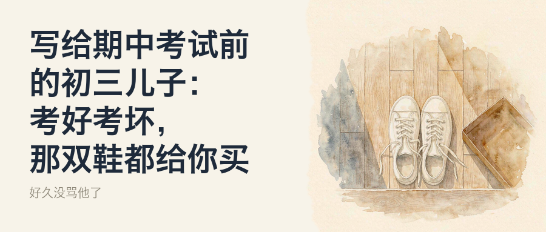
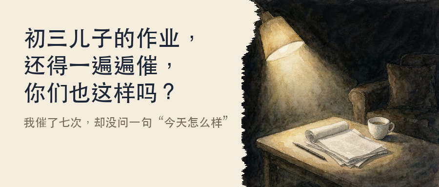
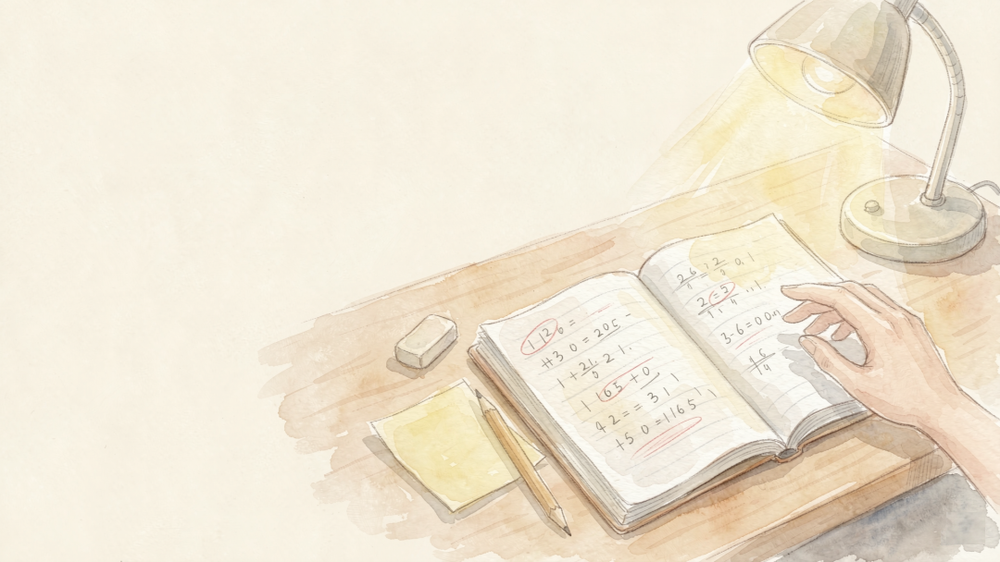
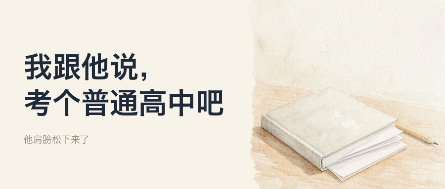
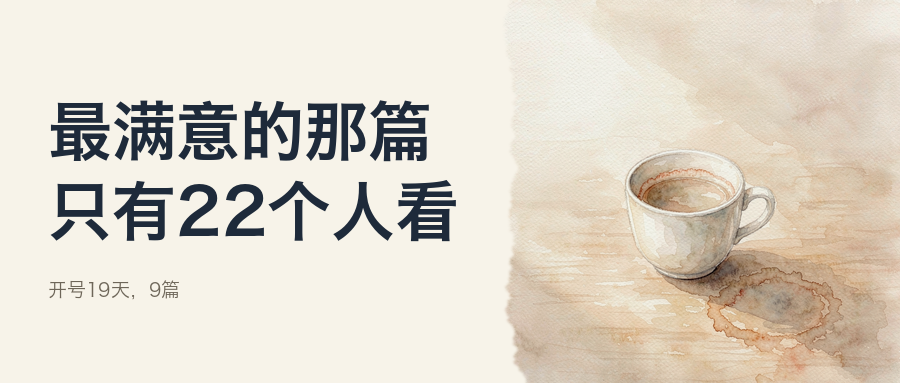
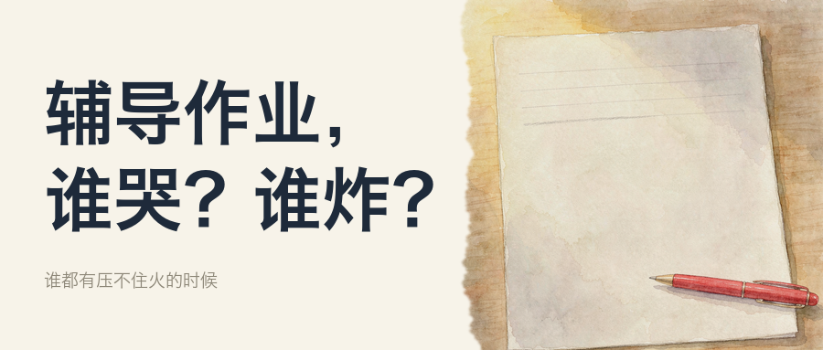
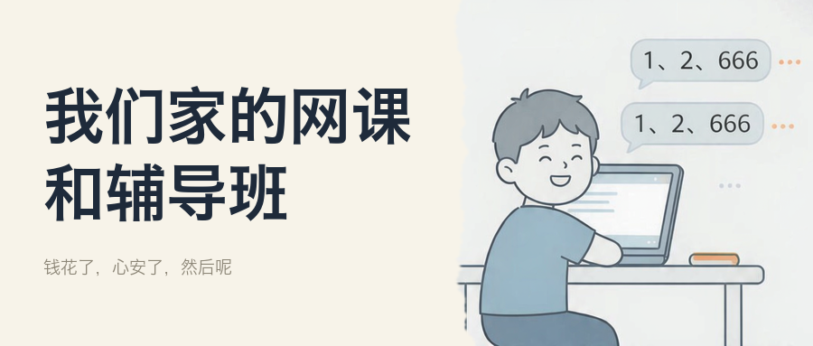
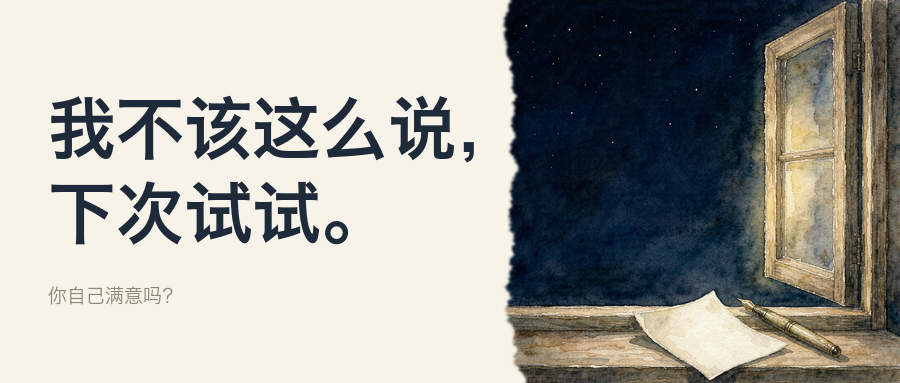
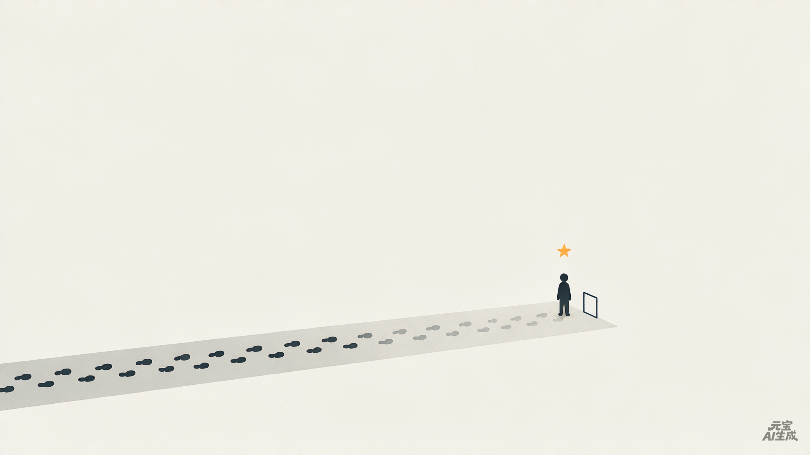
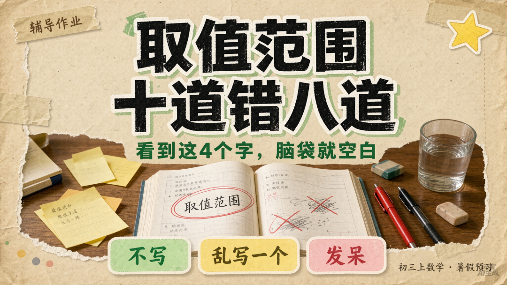

一个父亲，陪孩子整理作业和错题的地方。
好大儿14岁，闺女4岁。作业不慌，错题不慌，成长不慌。



秋假连周末五天，头两天玩，最后一天他从早写到晚。我说休息，他说没事。我看着累，想起他小时候去海边爬山的欢快，忽然明白：我们这代家长，把为你好从带他去玩改成了让他别太累。


开号19天，9篇公众号、8篇贴图、5条视频。最满意的那篇只有22个人看，但我跑通了从写到发的流程，也遇见了100多位愿意停下来读一读的有缘人。下个月不追流量，回到初心。




